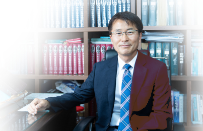

다사랑 소식지 발간을 축하합니다
할렐루야! 다사랑교회 소식지 발간을 환영하고 축하합니다. 아무쪼록 소식지를 통해 교회 각 기관과 여러 모임 그리고 성도님들 개인에게 베푸시는 하나님의 사랑의 손길에 관한 소식들이 풍성히 전해지기를 소망합니다. 아울러 다사랑 소식지가 하나님께 감사하며 찬양하는 도구가 될 뿐 아니라 공동체의 기쁜 일, 슬픈 일도 함께 나눔으로 교회가 사랑으로 연합되어져 가는 하나님의 아름다운 도구가 되기를 기대합니다.
때에 맞춰 소식지 발행을 허락하신 하나님께 감사를 드립니다. 새롭게 출발하는 편집부에 하나님의 은혜가 함께 하시기를 기원하며, 수고하는 손길들이 하나님의 귀한 통로의 역할을 잘 감당하도록 축복합니다.
(담임목사 박금수)